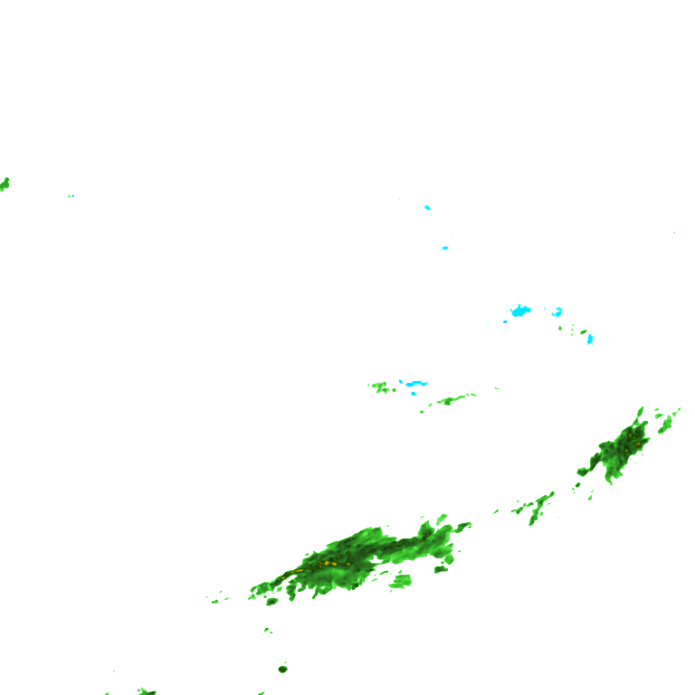
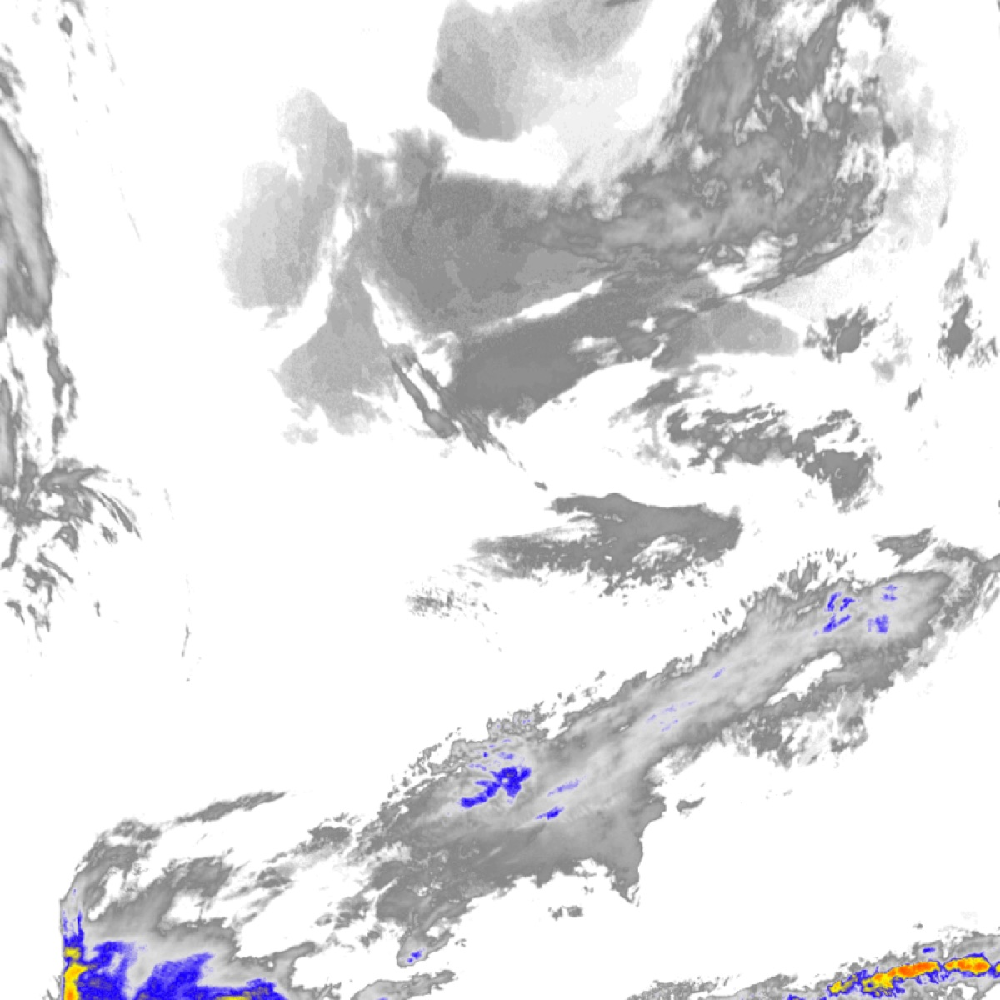
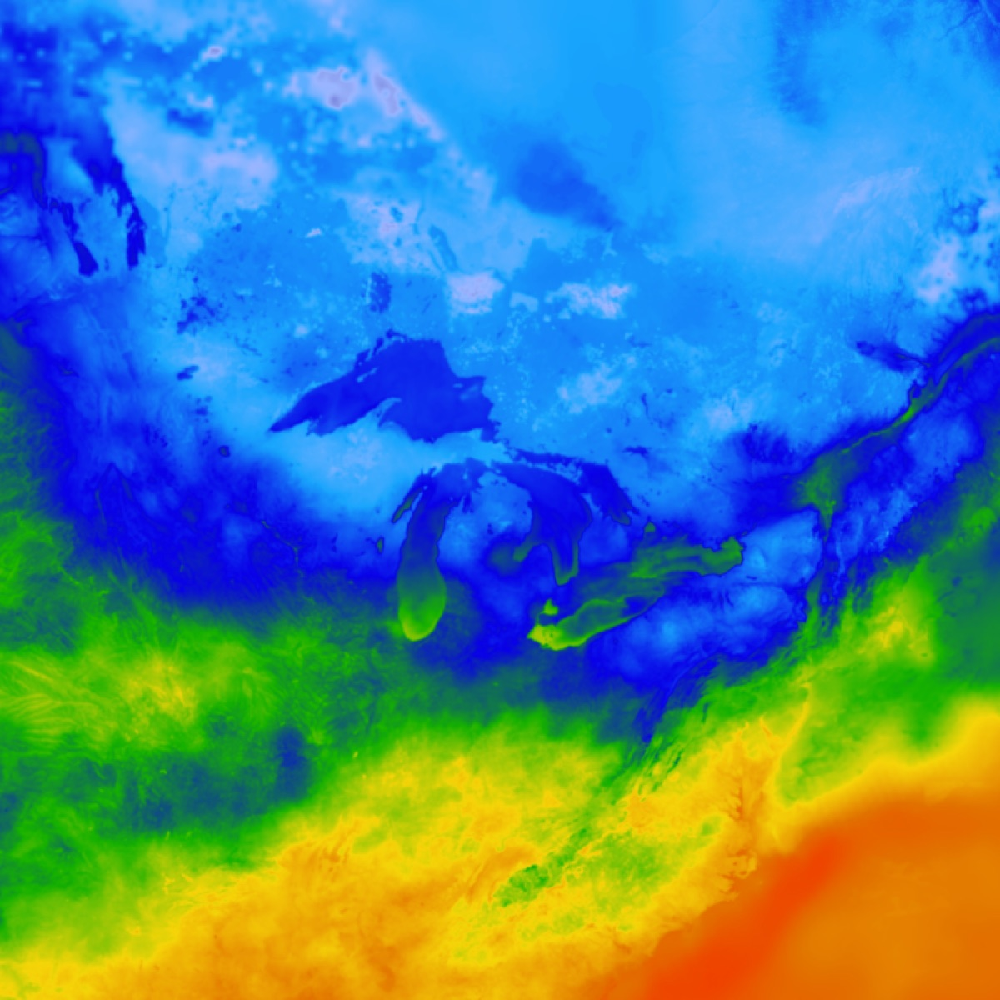
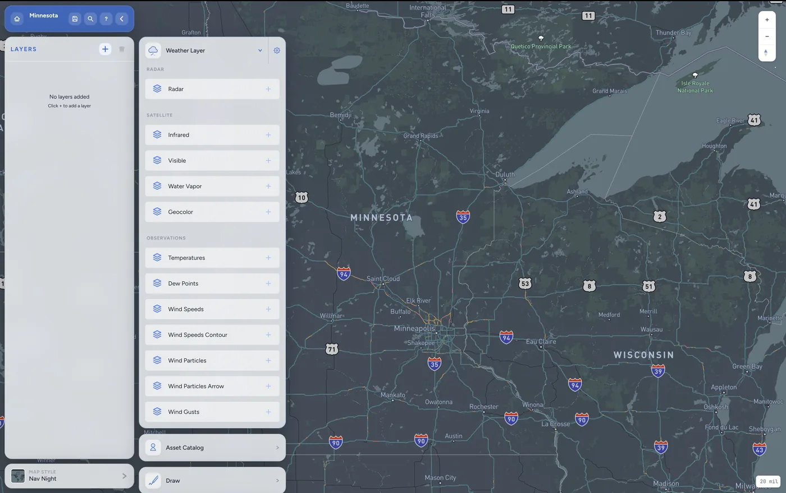
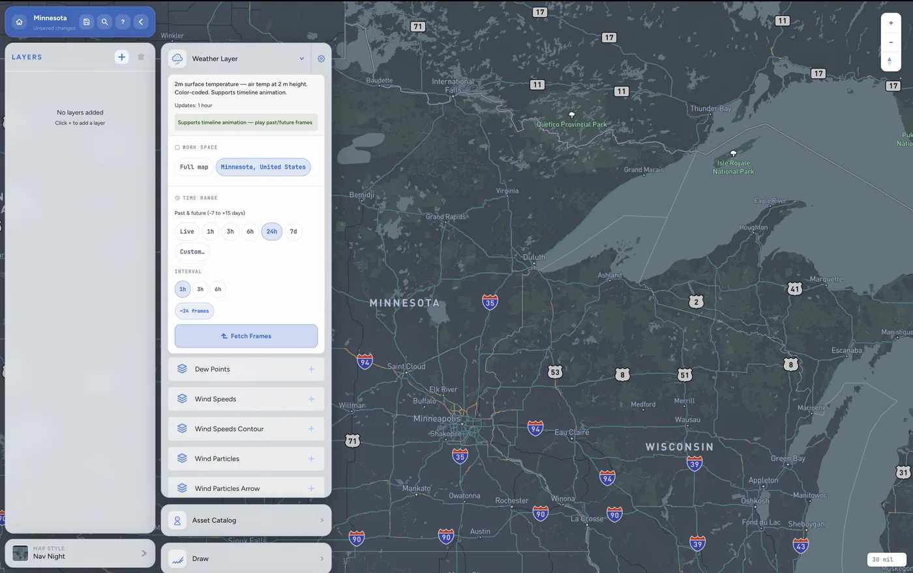

Full-stack browser-based weather graphics platform for TV broadcasters and content creators. Build animated weather graphics from live radar, satellite, and observation data, then export at 4K or stream live to OBS and vMix.
Editor with weather layer panel — radar, satellite, observation layers stack on a Mapbox base
Export
4K
MP4 · PNG · JPG
Data layers
40+
radar · sat · obs
Streaming
OBS
vMix · virtual cam
Billing
Stripe
subscription · metered
Product demo — building a weather graphic, adding layers, setting the animation timeline, exporting
01The editor
Users stack weather layers onto a Mapbox GL JS canvas: live radar, multi-spectral satellite (infrared, visible, water vapour, GeoColor), surface temperatures, dew points, wind speed with particle animation. Draw tools, text labels, and a full meteorological symbol library sit above the map. The animation engine sequences time steps; export assembles an MP4 at up to 4K or frames it as a continuous stream via virtual camera.
Full editor view. Layer panel on the left, map canvas in the centre, draw/text tools in the toolbar.
More than 40 live data layers are available from the XWeather API, grouped by category. Each layer has its own time range selector — live through ±7-day forecast — and fetches the correct frame sequence per interval. Layers can be stacked in any order with individual opacity controls.

Radar

Satellite · GeoColor

Surface temperature

Layer picker — 40+ categories, each with thumbnail preview, animation mode, and time range controls

Per-layer time range — live, 1 h, 3 h, 6 h, 24 h, 7-day forecast, custom range
03Broadcast output
The final product is broadcast-ready. A Format step locks the crop area; Export renders every frame at the target resolution and assembles the MP4. For live production, a virtual camera exposes the canvas directly to OBS or vMix — presenters can switch between city slides and live radar without leaving the broadcast chain. The template library ships with pre-built forecast layouts that studios can brand and reuse.
Broadcast mode — automated city slide sequence, virtual camera output, live data updates per slide
Subscription and auth — Supabase for accounts, Stripe for plan management and export credits
05Stack
No framework, vanilla JS modules with a hand-rolled project state store. Frontend deployed to AWS CloudFront. All persistence through Supabase (auth + project saves). Stripe handles subscriptions and metered export credits.